About Me
(psst you can scroll the box with images!)
Hii! My name is Petra (she/her), and I'm a queer 26-year-old English student from Austria! I used to be a frontend web developer, and am obviously a big fan of the web. This site is my appreciation for the old web!
I also draw, write, create playlists, make video edits, and do a bunch of other things that you might find on here!

I love fandom spaces and regularly get obsessed with certain pieces of media - you will see them around here.
Facts:
Me Core:
Hobbies

Likes
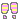
Dislikes
Click on the button below for a random fact about me!
Favorites
Favorite Shows
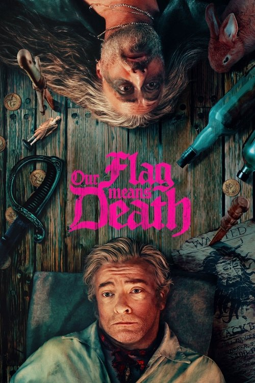
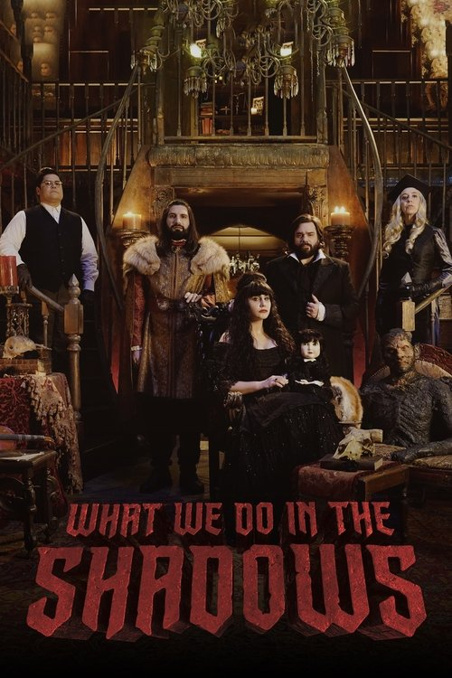
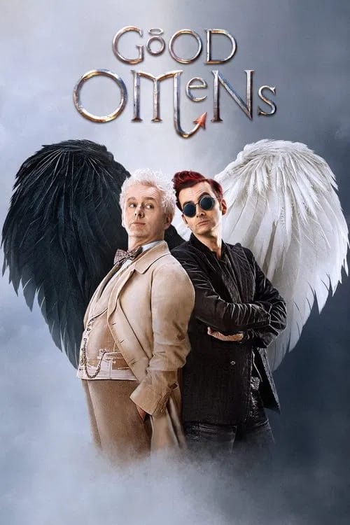
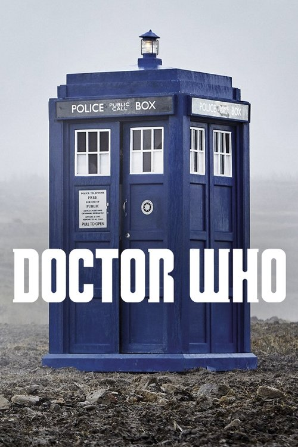
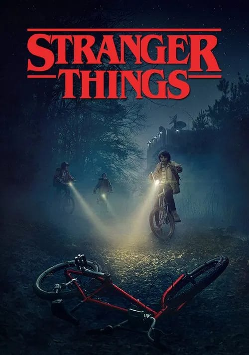
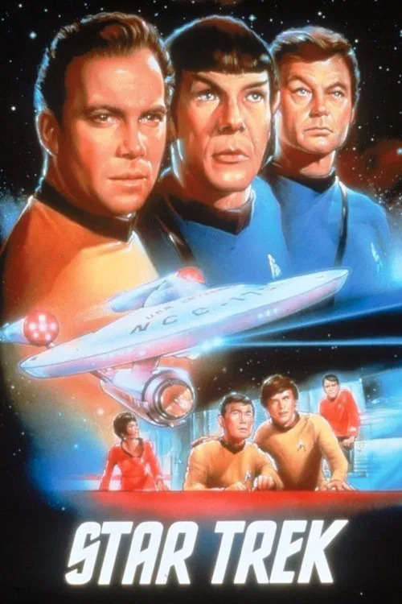
Favorite Movies
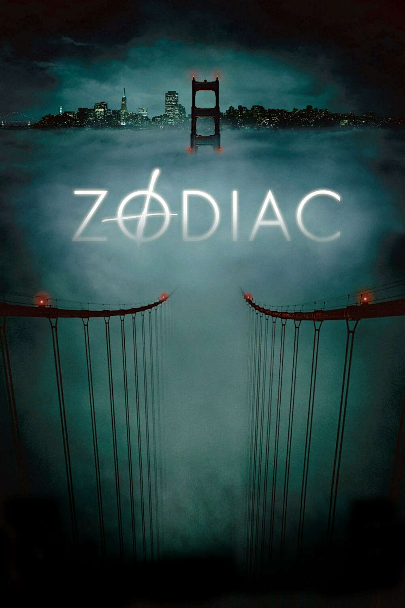


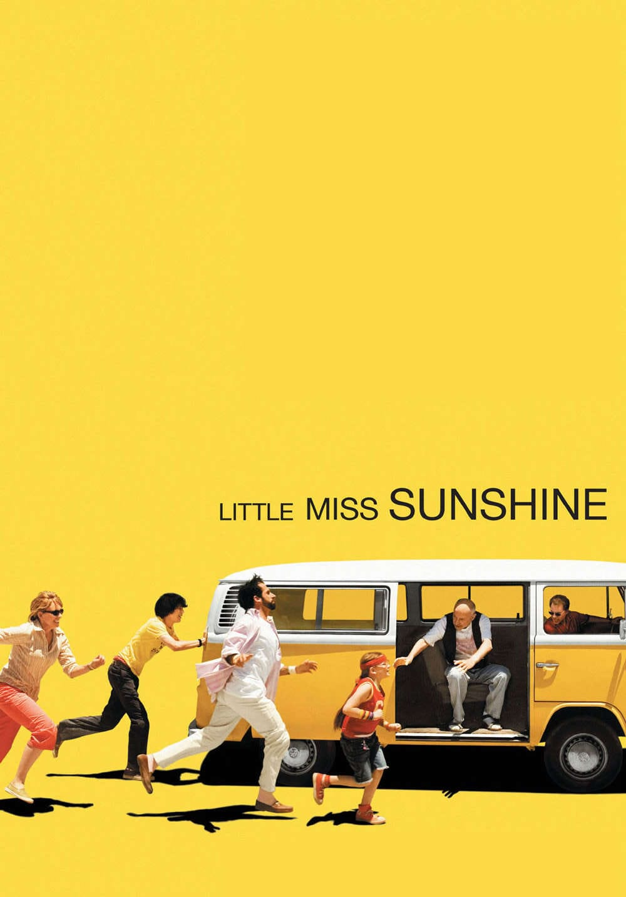
Favorite Books
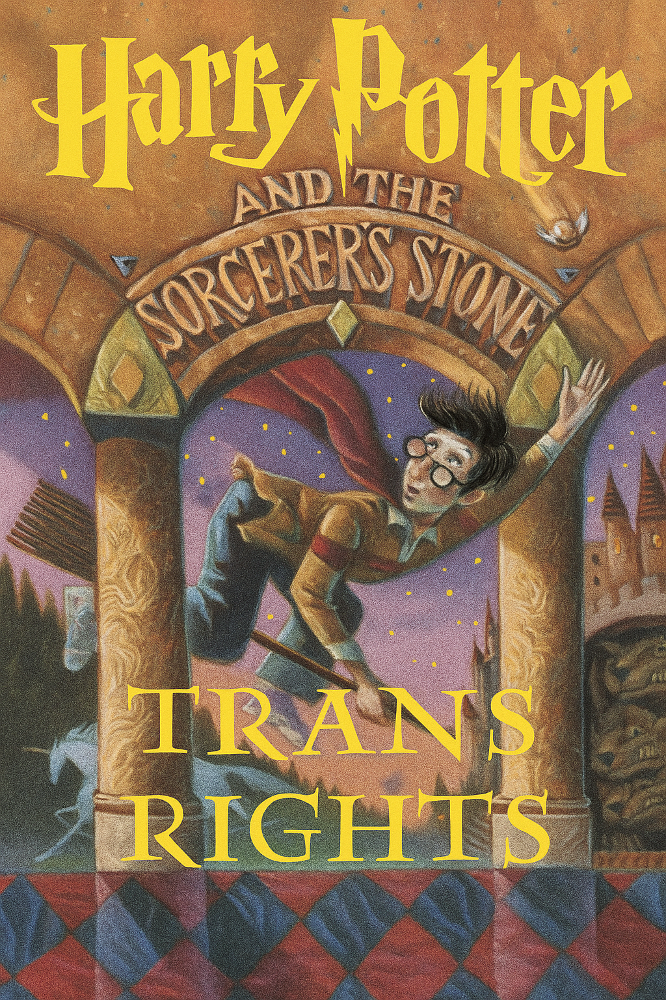
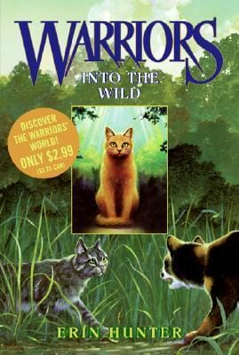
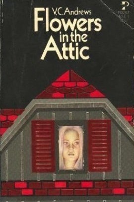
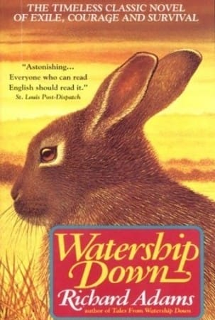
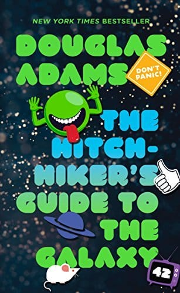
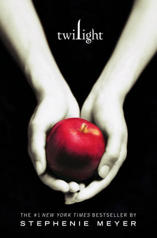
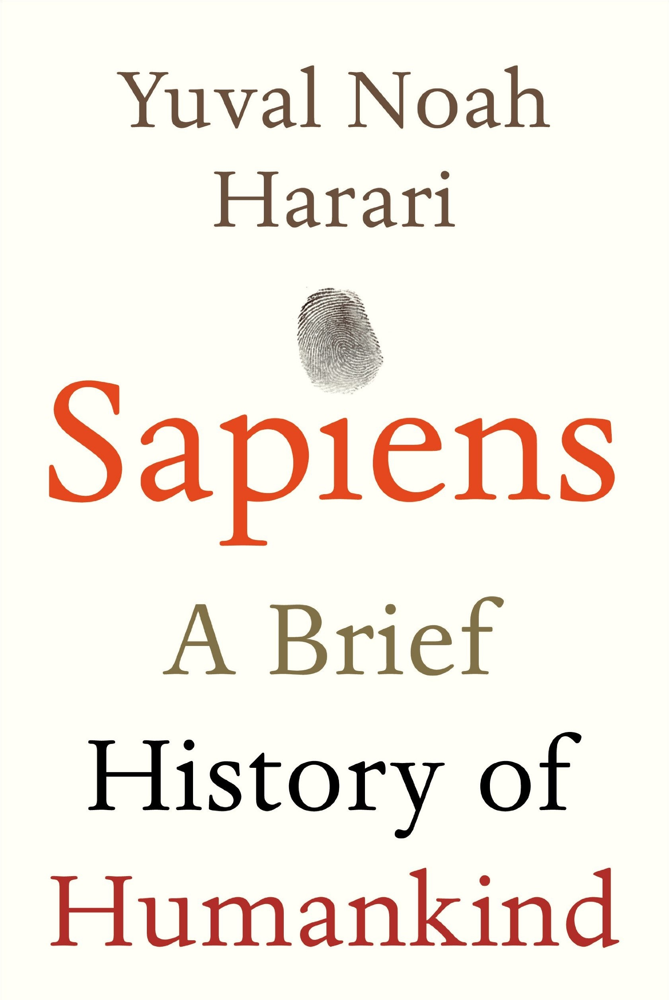
Favorite Video Games
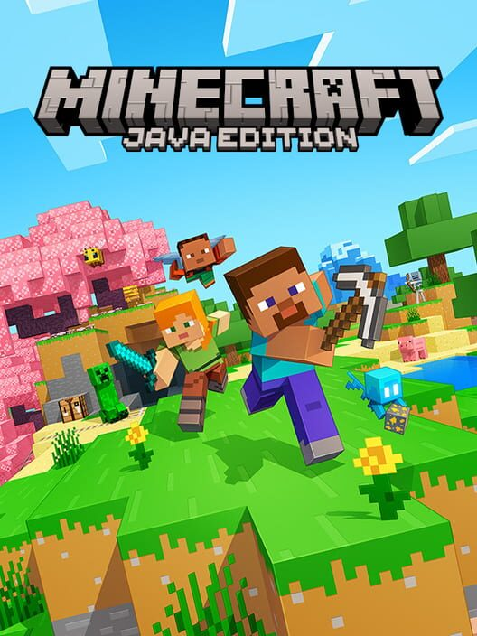
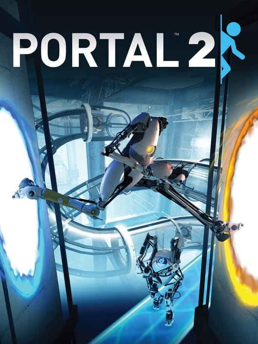
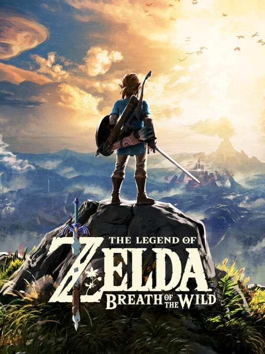
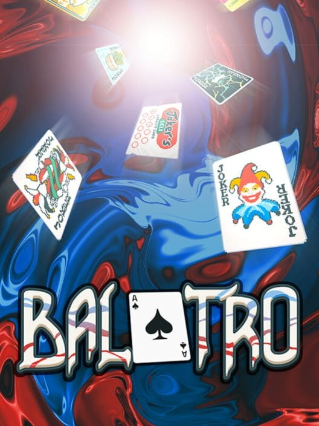
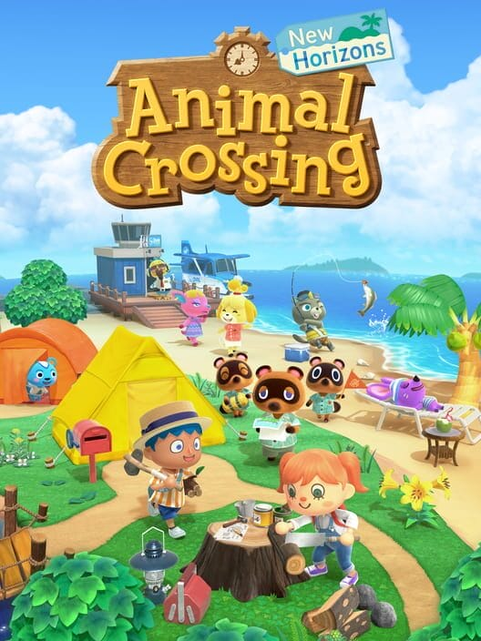
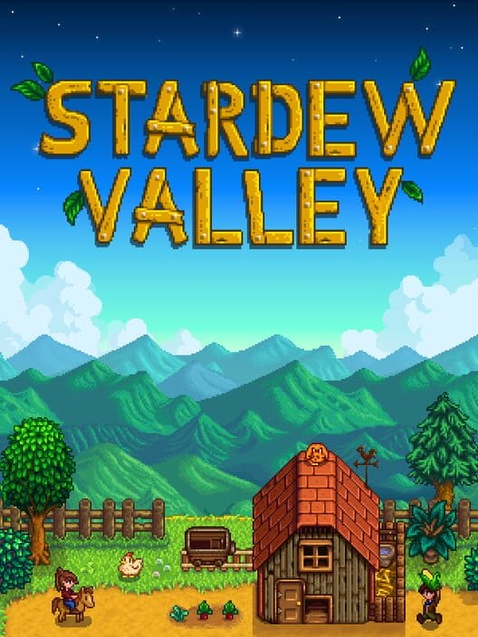
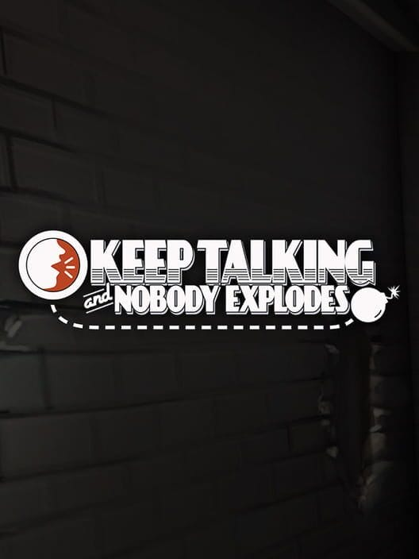
Favorite Channels
Favorite Actors
Favorite Music
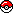
My favorite Pokémon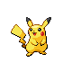
#025 Pikachu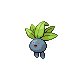
#043 Oddish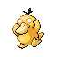
#054 Psyduck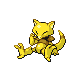
#063 Abra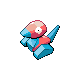
#137 Porygon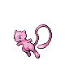
#151 Mew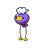
#425 Drifloon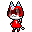
Kid Cat Jock Cat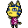
Ankha Snooty Cat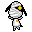
Lucky Lazy Dog Pietro Smug Sheep Merengue Normal Rhino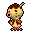
Zucker Lazy OctopusAesthetics
Here are some aesthetics I enjoy! (I know they don't really fit my website...)


I also really enjoy gore (blood, guts, bruises, etc) but I didn't include it here in case it might be triggering to someone!
Other Favorites
Click on the button below for a random favorite of mine!
- github
- greasyfork
- github website
- tumblr themes (on semi-permanent hiatus)
GPOY
AKA "relatable images". They are partially stolen from other people's GPOY. Shown in random order.
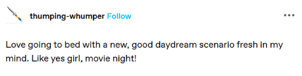
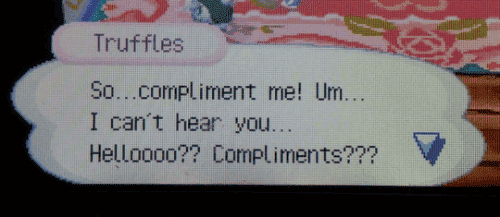
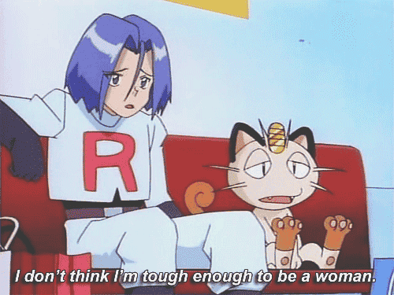
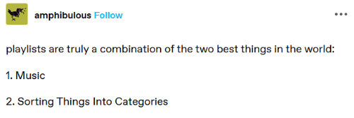
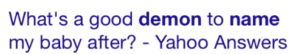
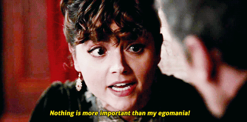
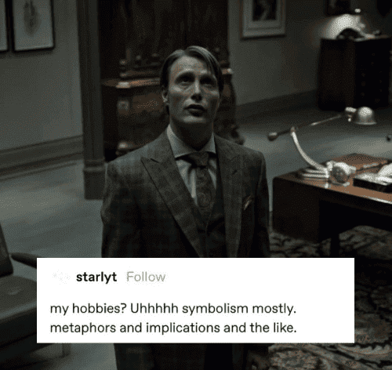
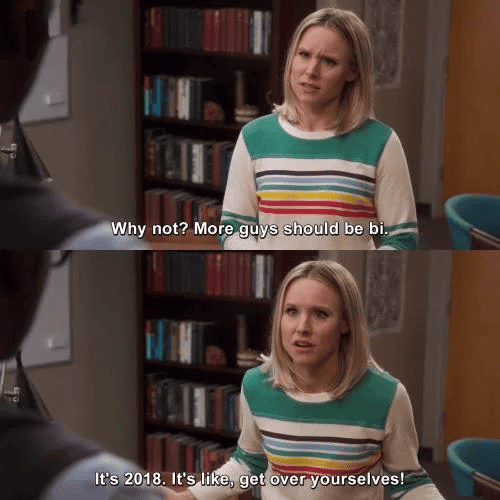
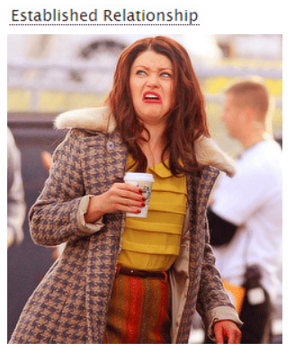